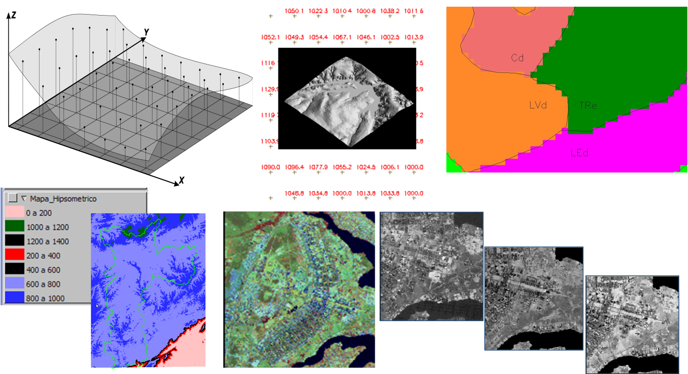
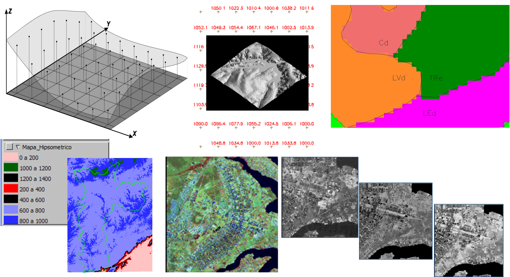

Serviços

Os serviços disponíveis incluem serviços de coleta, interpolação, análise, visualização e alerta. As características dos serviços são:
- Somente usuário com privilégio de administrador pode configurar e inicializar os serviços;
- Os serviços podem ser executados na máquina local ou remota;
- O usuário administrador pode criar vários serviços de cada tipo;
- Um “log” de cada serviço é criado no banco de dados PostgreSQL + PostGIS da plataforma para armazenar o status corrente;
- Por default um serviço local de cada tipo já vem configurado após a instalação.
Um ícone será associado para cada tipo de serviço, ou seja:
- Serviço de Coleta -
- Serviço de Análise -
- Serviço de Visualização -
- Serviço de Alerta -
- Serviço de Interpolação-

A Figura 2.4 mostra a área de trabalho do menu Serviços. Note que um tipo de cada serviço vem automaticamente configurado após a instalação. Nesta área é possível iniciar ou parar individualmente cada serviço, ou ainda iniciar e parar todos. Um serviço ainda pode ser removido. Veja a seguir mais detalhes de cada serviço e as opções de manipulação.

Figura 2.4 – Módulo de Administração: serviços disponíveis.
SERVIÇO DE COLETA
O serviço de coleta é utilizado para a busca de dados dinâmicos em servidores locais ou remotos. Cada dado dinâmico deverá ter uma programação para que seja feita a coleta por este serviço e incorporado à base de dados. As seguintes propriedades deverão ser preenchidas:
- Informação: identificação do serviço;
- Máquina: se local informar caminho e porta, se remoto informar o endereço Ssh, caminho, porta e usuário com permissão de executar o serviço;
- Log: local em banco de dados a ser armazenado o status do serviço.
SERVIÇO DE ANÁLISE
O serviço de análise é utilizado para executar os cálculos dos modelos de análise escritos em Python. As seguintes propriedades deverão ser preenchidas:
- Informação: identificação do serviço;
- Máquina: se local informar caminho e porta, se remoto informar o endereço Ssh, caminho, porta e usuário com permissão de executar o serviço;
- Log: local em banco de dados a ser armazenado o status do serviço.
SERVIÇO DE VISUALIZAÇÃO
O serviço de visualização é utilizado para publicar os dados estáticos, dinâmicos ou resultado de análises no módulo de monitoramento web fazendo uso de um servidor de mapas, no caso o Geoserver deverá ser configurado para ser ser utilizado. As seguintes propriedades deverão ser preenchidas:
- Informação: identificação do serviço;
- Máquina: se local informar caminho e porta, se remoto informar o endereço Ssh, caminho, porta e usuário com permissão de executar o serviço;
- Log: local em banco de dados a ser armazenado o status do serviço.
- Parâmetros do servidor de mapas: local, porta e usuário do Geoserver devem ser informados. Se não foi alterado nenhum parâmetro na instalação do Geoserver estes devem ser:
- Endereço: http://localhost/geoserver
- Porta:8080
- Usuário: admin
- Senha: geoserver (valor padrão da instalação)
IMPORTANTE: Em um ambiente corporativo com vários usuários recomendamos alterar a senha Geoserver.
SERVIÇO DE ALERTA
O serviço de alerta é utilizado para envio de e-mail e SMS. As seguintes propriedades deverão ser preenchidas:
- Informação: identificação do serviço;
- Máquina: se local informar caminho e porta, se remoto informar o endereço Ssh, caminho, porta e usuário com permissão de executar o serviço;
- Log: local em banco de dados a ser armazenado o status do serviço;
- Servidor de E-mail: configuração do servidor SMTP deve ser informada. Exemplo do servidor de email do GMAIL tem os seguintes parâmetros:
- Mervidor: smtp.gmail.com
- Porta: 587
- Usuário: <seu email>
- Senha: <sua senha>
SERVIÇO DE INTERPOLAÇÃO
O serviço de interpolação é utilizado para criar dados dinâmicos matriciais a partir da interpolação de dados dinâmicos de PCD ou ocorrências. As seguintes propriedades deverão ser preenchidas:
- Informação: identificação do serviço;
- Máquina: se local informar caminho e porta, se remoto informar o endereço Ssh, caminho, porta e usuário com permissão de executar o serviço;
- Log: local em banco de dados a ser armazenado o status do serviço.
As opções de manipulação de serviços são:
ADICIONAR UM SERVIÇO LOCAL OU REMOTO:
Para adicionar um novo serviço é necessário que um usuário administrador esteja conectado. No menu “ Administração” escolha “
Administração” escolha “ Serviços” para a lista de serviços disponíveis ser apresentada na área de trabalho. Clique no botão “ + ” para adicionar novo serviço. Utilize o botão “Salvar” para salvar o serviço. Não é permitido nome de serviço em duplicidade. Botão “Cancelar” volta à tela anterior sem salvar o serviço.
Serviços” para a lista de serviços disponíveis ser apresentada na área de trabalho. Clique no botão “ + ” para adicionar novo serviço. Utilize o botão “Salvar” para salvar o serviço. Não é permitido nome de serviço em duplicidade. Botão “Cancelar” volta à tela anterior sem salvar o serviço.
Para validar os parâmetros fornecidos ao adicionar/editar um serviço clique em “Verificar Conexão”. No topo da janela uma lista dos itens verificados é apresentada. Caso ocorra algum erro, a mensagem ficará em vermelho. Detalhes de como adicionar um serviço veja aqui.
FILTRANDO ITENS NA LISTA DE SERVIÇOS:
Para filtrar itens na lista de serviços clique em “ Serviços” no menu de opções. Na área de trabalho no campo texto “Digite para pesquisar” digite o texto desejado. Note que todas as colunas disponíveis são utilizadas no filtro. Utilize o botão “ Avançado” para apresentar os botões referentes aos tipos de serviços e escolher os que deverão fazer parte da lista. Por padrão todos os tipos estarão selecionados. O filtro digitado e os botões de escolha do tipo de serviços são combinados para apresentar os itens da lista.
Serviços” no menu de opções. Na área de trabalho no campo texto “Digite para pesquisar” digite o texto desejado. Note que todas as colunas disponíveis são utilizadas no filtro. Utilize o botão “ Avançado” para apresentar os botões referentes aos tipos de serviços e escolher os que deverão fazer parte da lista. Por padrão todos os tipos estarão selecionados. O filtro digitado e os botões de escolha do tipo de serviços são combinados para apresentar os itens da lista.
REMOVENDO UM SERVIÇO:
Para remover um serviço somente um usuário com privilégio de administrador poderá fazer. No menu “ Administração” clique “
Administração” clique “ Serviços” para apresentar a lista de serviços disponíveis na área de trabalho. Na frente do nome do serviço clique em “Remover”. Clique o botão “OK” para confirmar remoção.
Serviços” para apresentar a lista de serviços disponíveis na área de trabalho. Na frente do nome do serviço clique em “Remover”. Clique o botão “OK” para confirmar remoção.
IMPORTANTE: Todos os itens do projeto (dado dinâmico, interpolação, análise, visualização ou alerta) que estiverem associados a um serviço correspondente (coleta, interpolação, análise, visualização ou alerta) serão removidos junto com o serviço. Não há como recuperar os itens de um projeto que foram removidos por consequência da remoção de um serviço associado. Faça a exportação parcial ou total de seus projetos se realmente desejar remover um serviço.
INICIALIZANDO SERVIÇO:
Para iniciar serviços somente um usuário com privilégio de administrador poderá fazer. No menu “ Administração” clique “
Administração” clique “ Serviços” para apresentar a lista de serviços disponíveis na área de trabalho. Na frente do nome do serviço clique em “Iniciar”. O Status, representado por uma bola vermelha
Serviços” para apresentar a lista de serviços disponíveis na área de trabalho. Na frente do nome do serviço clique em “Iniciar”. O Status, representado por uma bola vermelha  , passa para uma bola verde
, passa para uma bola verde  . Para iniciar todos os serviços ou aqueles que ainda não foram iniciados clique em “Iniciar todos”.
. Para iniciar todos os serviços ou aqueles que ainda não foram iniciados clique em “Iniciar todos”.
FINALIZANDO SERVIÇO:
Para finalizar ou parar serviços somente um usuário com privilégio de administrador poderá fazer. No menu “ Administração” clique “
Administração” clique “ Serviços” para apresentar a lista de serviços disponíveis na área de trabalho. Na frente do nome do serviço clique em “Parar”. O Status, representado por uma bola verde
Serviços” para apresentar a lista de serviços disponíveis na área de trabalho. Na frente do nome do serviço clique em “Parar”. O Status, representado por uma bola verde  , passa para uma bola vermelha
, passa para uma bola vermelha  . Para parar todos os serviços clique em “Parar todos”. Entretanto, esta opção só estará disponível quando todos os serviços estiverem em execução.
. Para parar todos os serviços clique em “Parar todos”. Entretanto, esta opção só estará disponível quando todos os serviços estiverem em execução.